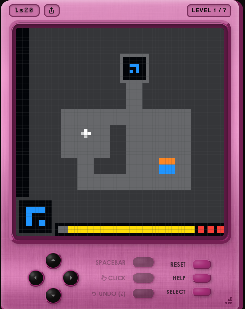

「GPT-6 Astra って、結局どうなの？」
0.3%→62.7%
わずか5か月で、「AIにはまだ無理」がかなり減った
GPT-6 Astra ／ OpenAI が 2026年9月に公開した最新モデル
数字は ARC-AGI-3（人間なら100%解けるよう設計された課題）での到達度 2026年3月 → 9月
何が伸びたのか
| 評価 | Sol | Astra | 差 |
|---|---|---|---|
| 知識・推論 ― ほぼ頭打ち | |||
| GPQA Diamond | 94.6% | 96.0% | +1.4 |
| 自律作業 ― 急伸 | |||
| AutomationBench | 18.1% | 41.4% | +23.3 |
| Terminal-Bench 4.0 | 37.3% | 57.7% | +20.4 |
| ARC-AGI-3 | 7.8% | 62.7% | +54.9 |
数問チャットで試しても差は体感できない。伸びている軸が変わった。
縞の棒は他社と横並びで比較できない条件での数字（下記参照）。
重要なのは62.7%という値ではなく、この上がり方の速さ。
「Astraは99.9%」と聞いた場合 どちらも本当で、測り方が2通りあります。グラフの 62.7% は、各社のモデルを同じ条件に揃えて横並びで比べるときの数字。99.9% は、途中まで考えた内容を保持したまま解き進められる条件で、Astraの力を最大限引き出したときの数字です。他社と比較するなら前者、Astraの上限を見るなら後者。
GPT-5.6 Sol と GPT-6 Astra の比較。ARC-AGI-3 は Semi-Private。62.7%は各社共通条件、99.9%はOpenAI提供の実行環境での測定値。Source: OpenAI / ARC Prize Foundation
ARC-AGI-3 とは

arcprize.org で公開されている実際のゲーム画面（Task ls20）。誰でもブラウザで遊べます。
探索 → 仕組みを理解
→ 目標を見つける → 計画して実行
正解を知っているかではなく、初めての環境で
「何をすべきか」を自分で組み立てられるか。
しかも「総当たり」ではない
0.0%
解けたレベルのうち、人間の中央値より少ない操作で到達した割合
0.0%
平均で、人間よりこの割合だけ操作が少ない
操作効率は、Astra が最高性能（99.9%）を出した条件での測定。2枚目の 62.7% とは測り方が異なる。Source: ARC Prize Foundation
実際のソフトで
今回上がったのは操作の元になる「理解して計画する」力。
AI向けに手を加えた特別版ではなく、人間と同じ画面をそのまま操作しています。
assets/slides.mp4プレゼン資料に内容を入れ、
背景や体裁まで整える
assets/krita.mp4「ゴッホ風に、金門橋も」の指示だけで
Krita を操作し、白紙から描き上げる
どちらも AI用に作り直していない、人間が普段使っているソフトそのもの
当社にとっての意味
「AIが使える形」に仕事の側を変える必要があった
AIが「人間の仕事環境」に直接入る
「AIにできる業務探し」から「この仕事も渡せないか」へ
ただし
約2.6万ドル
ARC-AGI-3 で 62.7% を出すのにかかった費用（1回の評価。約400万円）
※ 99.9%を出した条件では約1.9万ドル。少ない手数で解けるぶん、スコアが高い方が安いという逆転が起きている。
「そのまま製造して
安全に使えるものではない」
公開されたCAD設計に対するエンジニアからの批判。作れることと使えることは別。
約4割
人間なら100%解ける課題で、Astraがまだ解けていない割合（到達度は62.7%）
能力の話と、任せてよいかの話は別
設計書を渡して
「性能・消費電力・面積を改善して」
論文と実装を渡して
「ボトルネックを見つけて改善して」
未整理の問題を渡して
「定式化して解法を探して」
こちらは予測ではなく事実。しかも1か月で段が上がっている
2026年8月Astra の社内版が、数学・理論計算機科学の未解決問題 10件で解決または大幅な進展。Lean 4 で機械検証のうえ GitHub 公開、トークン費用は合計 約2,000ドル。
2026年9月8日Astra より高性能な未公開モデルが、ミレニアム懸賞問題（賞金100万ドル）の一つ 「ナビエ・ストークス方程式」 で、約1万エージェント・88時間かけて証明に到達。Lean で形式検証済み。
※ ナビエ・ストークスは4つの定式化のうち外力ありのC・Dのみで、問題の全面解決ではない。独立検証・査読はこれからで、先行研究者との経緯にも異論が出ている。Astra本体ではなく、その次の世代が出した結果である点も含め、この枠は「到達点」ではなく「進み方の速さ」として見ていただきたい。
「今はまだできない」を固定した前提に置けない
2026 / 3 ほぼ 0% → 2026 / 9 62.7%
実務家の評価 Jane Street（トレーディングファーム）
“GPT‑6 Astra delivers state-of-the-art performance on our internal coding benchmarks and shows a clear step forward in trading intuition evaluations compared with GPT‑5.6 Sol.”
John Crepezzi — AI Assistants, Jane Street
“Claude Fable 5.1 solves more of our coding problems than Fable 5 or Opus 5, and achieves state of the art on trading intuition.”
Craig Falls — Head of Quantitative Research, Jane Street
実務家は、1社のモデルを妄信せず目的別に使い分け始めている
それぞれ OpenAI 公式サイト・Anthropic 公式サイトに掲載の顧客コメント。左は Astra 社内の前モデル（GPT-5.6 Sol）比較であり、Claude との直接比較ではない。Source: openai.com, anthropic.com